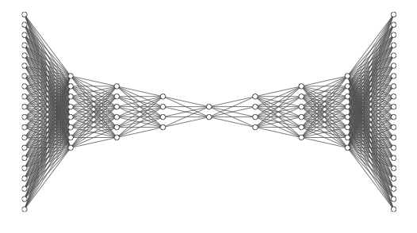

Model Reduction & Surrogates

We create data-driven reduced-order models (ROMs) and bi-/multi-fidelity surrogates to
accelerate large-scale PDE simulations and many-query tasks such as optimization, UQ, and Bayesian inversion.
Recent advances include
• Bi-/multi-fidelity surrogates for high-dimensional uncertainty propagation;
• Deep-learning hyper-reduction for non-intrusive ROMs;
• Bi-fidelity Ensemble Kalman inversion for PDE-constrained inverse problems;
• Mesh-reduced latent sequence models for deterministic & stochastic prediction;
• Adaptive global-local bases with error-driven enrichment.
Related Publications
-
Gao H., Zhu X., Wang J-X.
A Bi-fidelity Surrogate Modeling Approach for Uncertainty Propagation in 3-D Hemodynamics, 2020.
[Link]
-
Gao H., Wang J-X., Zahr M.
Non-intrusive Model Reduction of Large-scale Nonlinear Dynamical Systems Using Deep Learning, 2020.
[Link]
-
Gao H., Wang J-X.
A Bi-fidelity Ensemble Kalman Method for PDE-constrained Inverse Problems, 2020.
[Link]
-
Han X., Gao H., Pfaff T., et al.
Predicting Physics in Mesh-reduced Space with Temporal Attention, ICLR 2022.
[Link]
-
Gao H., Zahr M.
An Adaptive Model Reduction Method Leveraging Locally Supported Basis Functions, 2023.
[Link]
-
Sun L., Han X., Gao H., et al.
Unifying Predictions of Deterministic and Stochastic Physics in Mesh-reduced Space with Sequential Flow Generative Model, NeurIPS 2023.
[Link]
← Back to Homepage